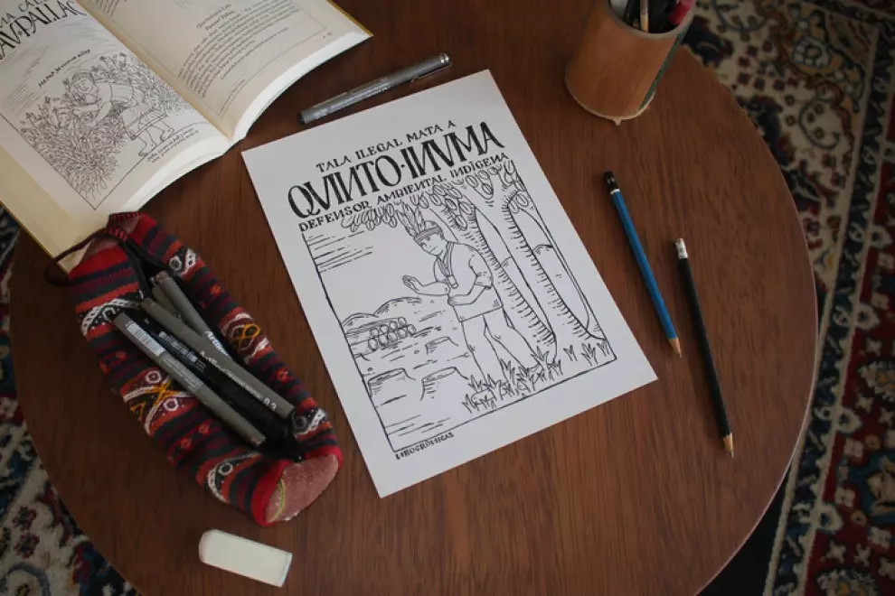
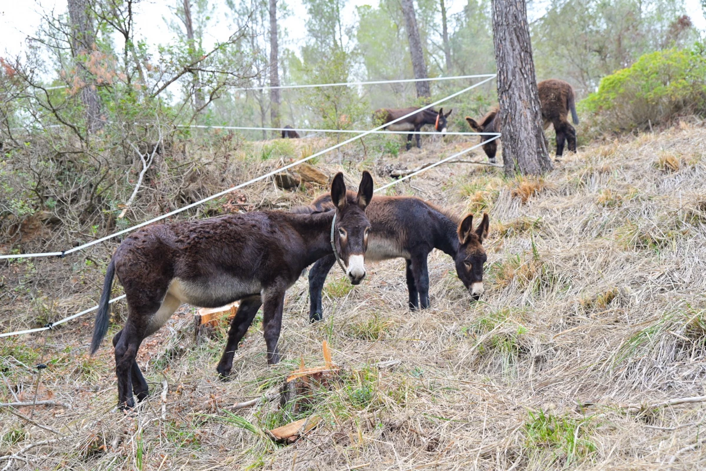
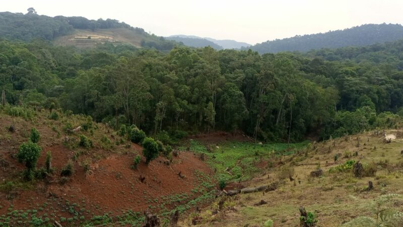
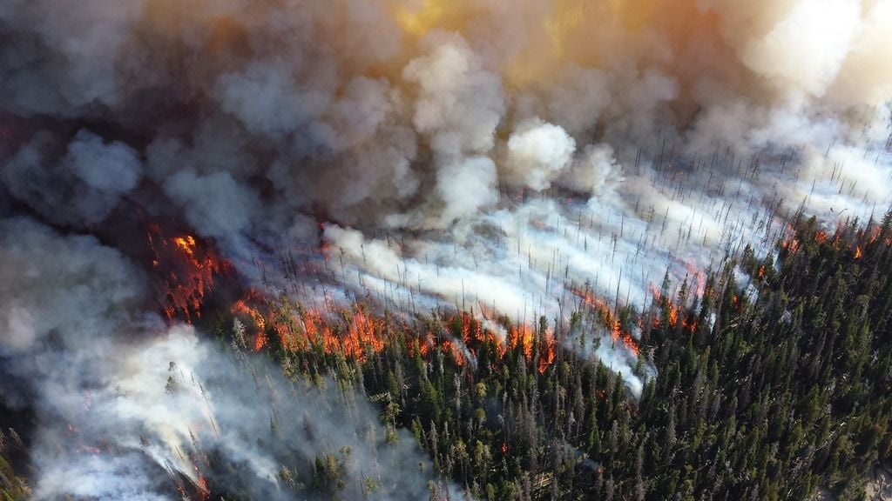
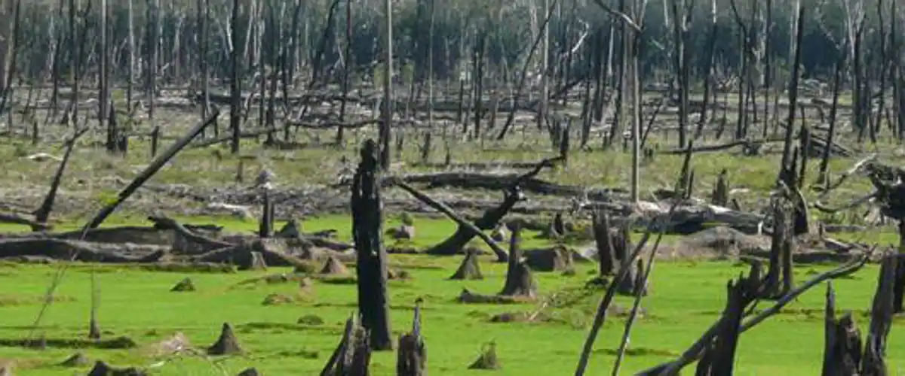

Perú infringe acuerdos internacionales y aprueba una norma a favor de la deforestación ilegal
Autor: JACQUELINE FOWKS
Ubicacion y horario: LIMA 12/01/2024 21:53
La modificación de la ley forestal pretexta una ayuda a productores de café y cacao que exportan a la UE, pero expertos denuncian que facilita la operación de organizaciones criminales en territorios de pueblos indígenas.
Publico
Los incendios en Chile no son una sorpresa inesperada
Autor: ANDREA BIZBERG
horario: 06 FEB 2024 - 05:30CET
Año tras año, los fuegos van en aumento tanto en frecuencia como en intensidad. Tanto es así que, en 2017, obligaron a modificar la escala con la que se medían a nivel global
ElPais

Burros y cabras limpian los bosques del Baix Llobregat
Autor: ARNAU RAIMUNDO BARBERO
horario: Viernes, 23 de febrero de 2024, 07:00
El proyecto pretende evaluar y demostrar cómo el pastoreo y la gestión forestal tienen efectos positivos sobre el territorio en el ámbito ambiental, económico y sociocultural
Vilapress

Bosques y parques de República Democrática del Congo y Burundi sufren por infertilidad de la tierra
Autor: JEAN SOVON
horario: 25/02/2024 23:00 GMT
En República Democrática del Congo y Burundi, la falta de tierras fértiles explotables obliga a la población a acaparar espacios forestales para crear campos fértiles. Esta depredación de la fauna cuestiona los límites de parques y bosques.
Globalvoices

Los incendios están consumiendo más bosques del mundo que nunca
Autor: FRANCISCO MARTIN LEON
horario: 04/12/2023 09:30
Un tercio de los bosques del mundo se talan para obtener madera y esto genera 1,5 billones de dólares al año. Pero los incendios forestales amenazan industrias como la aserradura y la fabricación de papel, y la amenaza es mucho mayor de lo que la mayoría de la gente cree
El Tiempo

Casi la mitad de los bosques amazónicos podrían desaparecer en 2050
Autor: ANONIMA
horario: 18/02/2024
Un estudio en el que participa el CSIC señala que podrían sufrir alteraciones irreversibles debido a la deforestación, el calentamiento global y la disminución de las lluvias
ABC